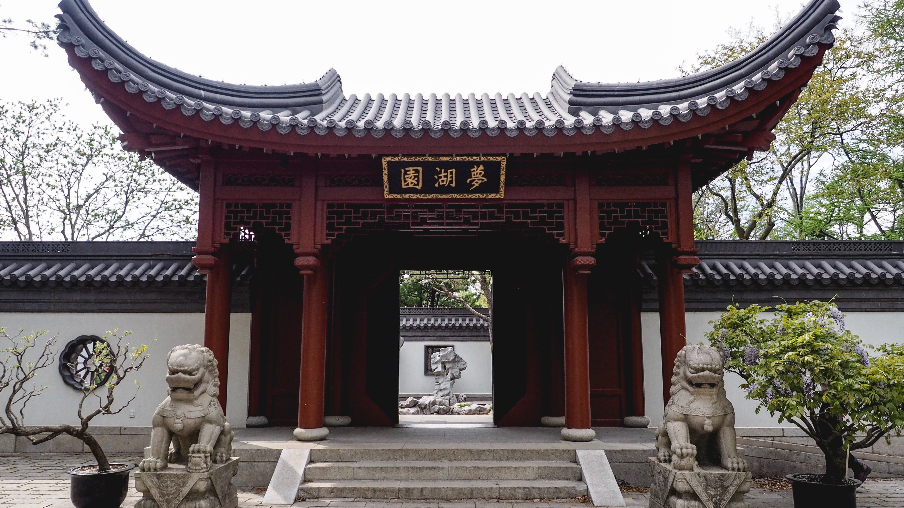

A chinese revenge drama
The Orphan of Zhao is a Chinese play from the Yuan era, attributed to the 13th-century dramatist Ji Junxiang (紀君祥). The play has as its full name The Great Revenge of the Orphan of Zhao. The play is classified in the zaju genre of dramas.[3] It revolves around the central theme of revenge.
The play is divided in six parts, comprising five acts (折 zhe) and a wedge (楔子 xiezi), which may be an interlude or—as it is in this case—a prologue.[4] It contains both dialogue and songs.[4] The story of The Orphan of Zhao takes place during the Spring and Autumn period.[5] The protagonists are General Han Jue in the first act, the retired Minister Gongsun Chujiu (公孙杵臼) in the second and third act, and the Zhao orphan in the final two acts.[4] The Orphan of Zhao was the earliest Chinese play to be known in Europe.[6]
Background
Until Ji Junxiang's play in the 13th century, the story appeared in prose form as historical narrative. After Ji's play, stage drama was the main form, with numerous regional operas, some completely independent of his play.[7] The Records of the Grand Historian, written by the historian Sima Qian from the Han dynasty, contains a chapter surrounding the events of the Zhao family.[8] These records were adapted by Ji Junxiang in The Orphan of Zhao.[9]
The play depicts the theme of familial revenge, which is placed in the context of Confucian morality
Until Ji Junxiang's play in the 13th century, the story appeared in prose form as historical narrative. After Ji's play, stage drama was the main form, with numerous regional operas, some completely independent of his play.[7] The Records of the Grand Historian, written by the historian Sima Qian from the Han dynasty, contains a chapter surrounding the events of the Zhao family.[8] These records were adapted by Ji Junxiang in The Orphan of Zhao.[9]
The play depicts the theme of familial revenge, which is placed in the context of Confucian morality and social hierarchical structure.[10] Although there might have been an intended emphasis on social values and norms, Shi (2009) stated that the many violent scenes all the more serve the purpose of theatrical entertainment,[11] while also inciting the emotional and moral feelings of the audience.[12]
Shi (2009) remarked that Cheng Ying's suffering and endurance, as he was forced to live in his enemy's household so he could protect the orphan, could be interpreted as an ironic reflection by the author about the ethno-political circumstances of the Yuan era.[12] The author therefore tried to incorporate Han institutions of Confucian values through his work.[12]
Main Characters
| Character | Role |
|---|---|
| General Tu'an Gu | e has a habit of bouncing a baseball against the cooler cell wall to entertain himself, as he plans an escape attempt. |
| Minister Zhao Dun | He is responsible for finding materials that will be necessary for the POWs on the outside |
| General Zhao Shuo | An ambitious RAF officer, himself a veteran escaper and a survivor of torture by the Gestapo, |
| Cheng Bo, the orphan | He suffers from claustrophobia and is fearful of tunnel collapses, primarily coming from his previous experience digging 17 escape tunnels. |
| Lady Zhuang | The Senior British Officer and de facto commanding officer of the prisoners |